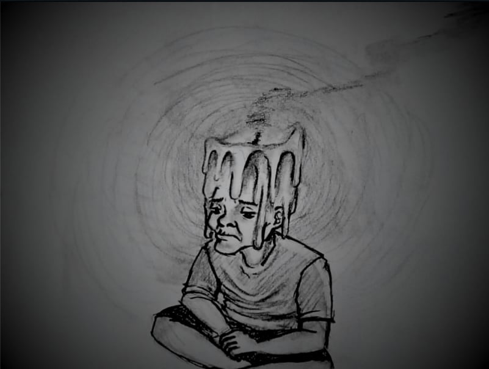

Dying Flame: The Cost of Apathy
source: Original Artwork (Phenelope A. Garca)
When disillusionment takes control, one can choose to seek justice in a corrupt nation, or to not do anything at all. There is a slow, but growing concern of Filipinos being discouraged to participate or engage in any political or civic involvement. The reasons vary, but there is a shared sentiment among them: their actions will not change anything.
Among the youth, majority express discontent with the current political system of the country. A recent study by the Institute of Southeast Asian Studies (ISEAS) in February 2025, even suggested that about 25% of undergraduate students would accept a non-democratic government. It is incredibly alarming that the future generations are highly opposed to the political system, and this discontent breeds a decline of concern and proactiveness to engage in meaningful civic activities.
Further demoralizations can be seen through the fear of some citizens to express their political opinions even with the full right of doing so. Whether it is online or offline, this hesitation suppresses active involvement and develops a feeling of helplessness among the people. This can be another example of a powerful figure taking advantage of common people, or even a cultural problem of shunning a person solely for their beliefs and not for their own reasons to that belief.
More importantly, is a lack of civic education, the mere fact that Filipinos still can easily fall for disinformation, and the improper practice of civic engagement should tell a lot. Votes are decided by who they know, arguments are based off an incredulous source online, is there a pattern here? Absolutely no sense of individuality, this passiveness is what exactly causes people to be easily manipulated.
The scale of the recent events is discouraging to look at, and it feels like the people are powerless to do anything. However, inaction would not lead to the problem solving itself, it only allows the powerful to take control of the people. News may come and go, and it seems like there is always a new issue just after a recent one, and that can lead to the public’s apathy on the situations happening at the country. Yet, the flame is not just held by a single person, but a combined effort of our unity, if we let it flicker and die, then darkness is sure to take ahold.